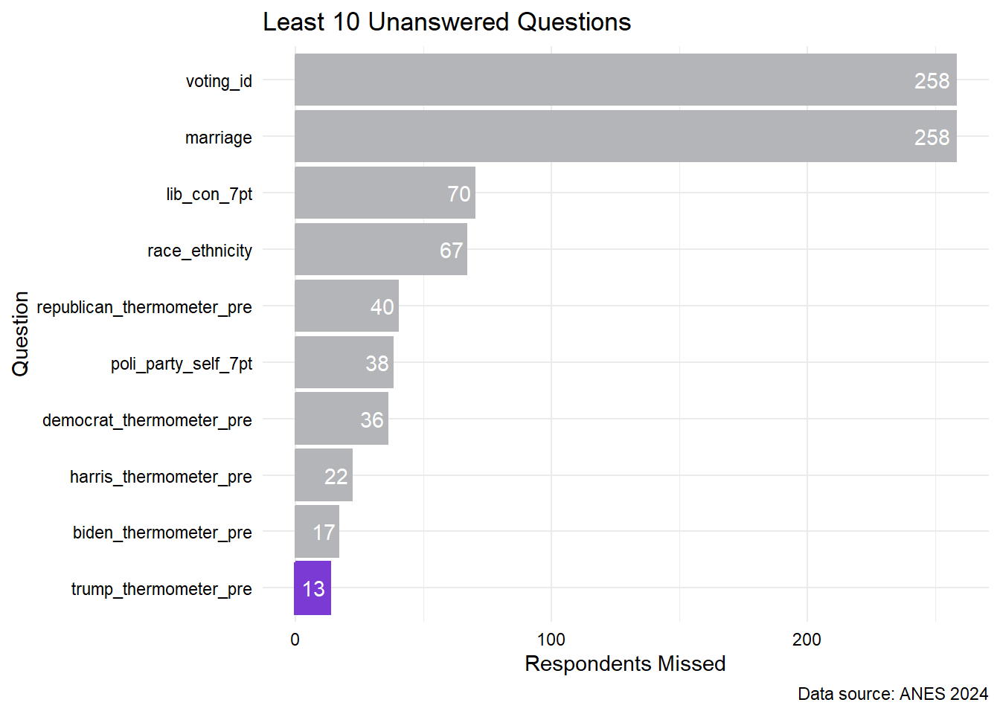
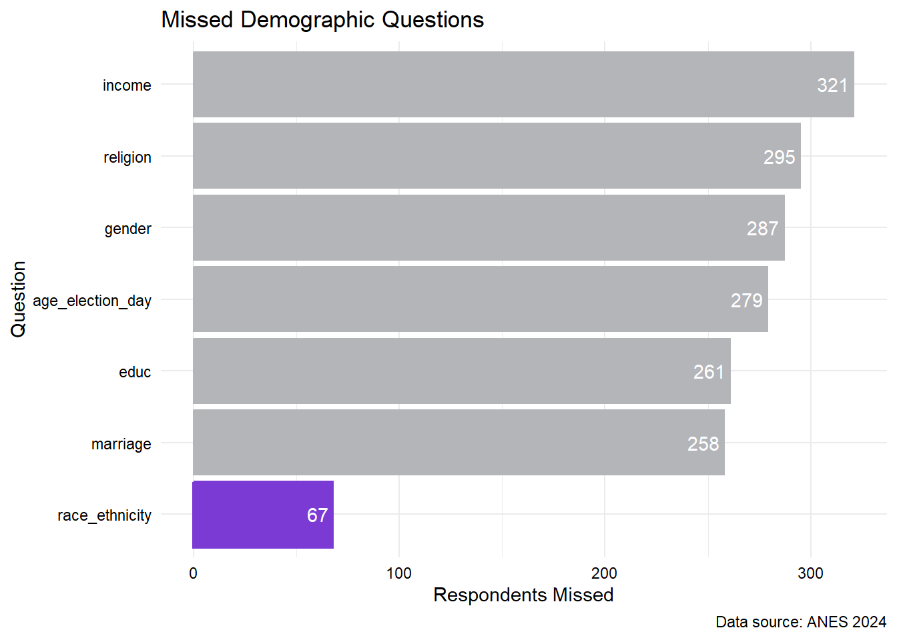
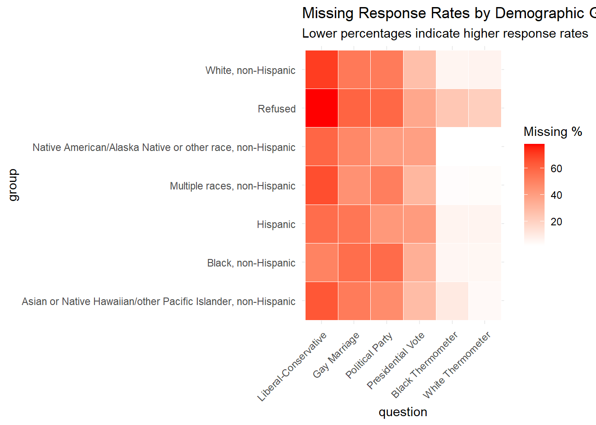
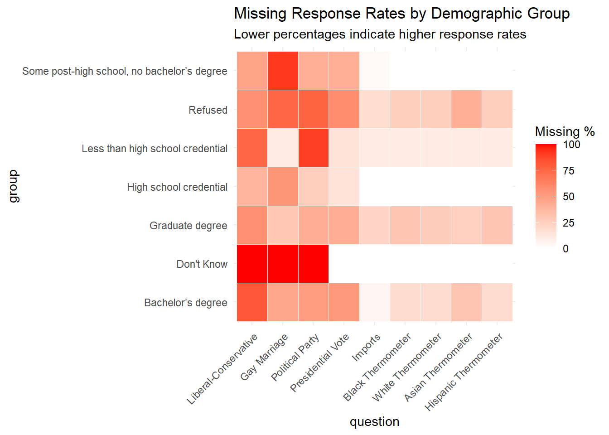

library(tidyverse)
library(readr)
library(here)
library(survey)
library(ggplot2)
library(survey)
library(extrafont)missing
anes_2024 <- read_csv("../data/anes_2024_clean.csv")
codebook <- read_csv("../data/codebook.csv")font_import()Importing fonts may take a few minutes, depending on the number of fonts and the speed of the system.
Continue? [y/n] Exiting.loadfonts(device = "win")Agency FB already registered with windowsFonts().Algerian already registered with windowsFonts().Arial Black already registered with windowsFonts().Arial already registered with windowsFonts().Arial Narrow already registered with windowsFonts().Arial Rounded MT Bold already registered with windowsFonts().Bahnschrift already registered with windowsFonts().Baskerville Old Face already registered with windowsFonts().Bauhaus 93 already registered with windowsFonts().Bell MT already registered with windowsFonts().Berlin Sans FB already registered with windowsFonts().Berlin Sans FB Demi already registered with windowsFonts().Bernard MT Condensed already registered with windowsFonts().Blackadder ITC already registered with windowsFonts().Bodoni MT already registered with windowsFonts().Bodoni MT Black already registered with windowsFonts().Bodoni MT Condensed already registered with windowsFonts().Bodoni MT Poster Compressed already registered with windowsFonts().Book Antiqua already registered with windowsFonts().Bookman Old Style already registered with windowsFonts().Bookshelf Symbol 7 already registered with windowsFonts().Bradley Hand ITC already registered with windowsFonts().Britannic Bold already registered with windowsFonts().Broadway already registered with windowsFonts().Brush Script MT already registered with windowsFonts().Calibri already registered with windowsFonts().Calibri Light already registered with windowsFonts().Californian FB already registered with windowsFonts().Calisto MT already registered with windowsFonts().Cambria already registered with windowsFonts().Candara already registered with windowsFonts().Candara Light already registered with windowsFonts().Cascadia Code already registered with windowsFonts().Cascadia Mono already registered with windowsFonts().Castellar already registered with windowsFonts().Centaur already registered with windowsFonts().Century already registered with windowsFonts().Century Gothic already registered with windowsFonts().Century Schoolbook already registered with windowsFonts().Chiller already registered with windowsFonts().codicon already registered with windowsFonts().Colonna MT already registered with windowsFonts().Comic Sans MS already registered with windowsFonts().Consolas already registered with windowsFonts().Constantia already registered with windowsFonts().Cooper Black already registered with windowsFonts().Copperplate Gothic Bold already registered with windowsFonts().Copperplate Gothic Light already registered with windowsFonts().Corbel already registered with windowsFonts().Corbel Light already registered with windowsFonts().Courier New already registered with windowsFonts().Curlz MT already registered with windowsFonts().Dubai already registered with windowsFonts().Dubai Light already registered with windowsFonts().Dubai Medium already registered with windowsFonts().Ebrima already registered with windowsFonts().Edwardian Script ITC already registered with windowsFonts().Elephant already registered with windowsFonts().elusiveicons already registered with windowsFonts().Engravers MT already registered with windowsFonts().Eras Bold ITC already registered with windowsFonts().Eras Demi ITC already registered with windowsFonts().Eras Light ITC already registered with windowsFonts().Eras Medium ITC already registered with windowsFonts().Felix Titling already registered with windowsFonts().FontAwesome already registered with windowsFonts().Font Awesome 5 Brands Regular already registered with windowsFonts().Font Awesome 5 Free Regular already registered with windowsFonts().Font Awesome 5 Free Solid already registered with windowsFonts().Font Awesome 6 Brands Regular already registered with windowsFonts().Font Awesome 6 Free Solid already registered with windowsFonts().Footlight MT Light already registered with windowsFonts().Forte already registered with windowsFonts().Franklin Gothic Book already registered with windowsFonts().Franklin Gothic Demi already registered with windowsFonts().Franklin Gothic Demi Cond already registered with windowsFonts().Franklin Gothic Heavy already registered with windowsFonts().Franklin Gothic Medium already registered with windowsFonts().Franklin Gothic Medium Cond already registered with windowsFonts().Freestyle Script already registered with windowsFonts().French Script MT already registered with windowsFonts().Gabriola already registered with windowsFonts().Gadugi already registered with windowsFonts().Garamond already registered with windowsFonts().Georgia already registered with windowsFonts().Gigi already registered with windowsFonts().Gill Sans Ultra Bold already registered with windowsFonts().Gill Sans Ultra Bold Condensed already registered with windowsFonts().Gill Sans MT already registered with windowsFonts().Gill Sans MT Condensed already registered with windowsFonts().Gill Sans MT Ext Condensed Bold already registered with windowsFonts().Gloucester MT Extra Condensed already registered with windowsFonts().Goudy Old Style already registered with windowsFonts().Goudy Stout already registered with windowsFonts().Haettenschweiler already registered with windowsFonts().Harlow Solid Italic already registered with windowsFonts().Harrington already registered with windowsFonts().High Tower Text already registered with windowsFonts().HoloLens MDL2 Assets already registered with windowsFonts().Impact already registered with windowsFonts().Imprint MT Shadow already registered with windowsFonts().Informal Roman already registered with windowsFonts().Ink Free already registered with windowsFonts().Javanese Text already registered with windowsFonts().Jokerman already registered with windowsFonts().Juice ITC already registered with windowsFonts().Kristen ITC already registered with windowsFonts().Kunstler Script already registered with windowsFonts().Wide Latin already registered with windowsFonts().Leelawadee UI already registered with windowsFonts().Leelawadee UI Semilight already registered with windowsFonts().Lucida Bright already registered with windowsFonts().Lucida Calligraphy already registered with windowsFonts().Lucida Console already registered with windowsFonts().Lucida Fax already registered with windowsFonts().Lucida Handwriting already registered with windowsFonts().Lucida Sans already registered with windowsFonts().Lucida Sans Typewriter already registered with windowsFonts().Lucida Sans Unicode already registered with windowsFonts().Magneto already registered with windowsFonts().Maiandra GD already registered with windowsFonts().Malgun Gothic already registered with windowsFonts().Malgun Gothic Semilight already registered with windowsFonts().Marlett already registered with windowsFonts().Material Design Icons already registered with windowsFonts().Material Design Icons 5.9.55 already registered with windowsFonts().Matura MT Script Capitals already registered with windowsFonts().Microsoft Himalaya already registered with windowsFonts().Microsoft Yi Baiti already registered with windowsFonts().Microsoft New Tai Lue already registered with windowsFonts().Microsoft PhagsPa already registered with windowsFonts().Microsoft Sans Serif already registered with windowsFonts().Microsoft Tai Le already registered with windowsFonts().Mistral already registered with windowsFonts().Modern No. 20 already registered with windowsFonts().Mongolian Baiti already registered with windowsFonts().Monotype Corsiva already registered with windowsFonts().MS Outlook already registered with windowsFonts().MS Reference Sans Serif already registered with windowsFonts().MS Reference Specialty already registered with windowsFonts().MT Extra already registered with windowsFonts().MV Boli already registered with windowsFonts().Myanmar Text already registered with windowsFonts().Niagara Engraved already registered with windowsFonts().Niagara Solid already registered with windowsFonts().Nirmala UI already registered with windowsFonts().Nirmala UI Semilight already registered with windowsFonts().OCR A Extended already registered with windowsFonts().Old English Text MT already registered with windowsFonts().Onyx already registered with windowsFonts().Palace Script MT already registered with windowsFonts().Palatino Linotype already registered with windowsFonts().Papyrus already registered with windowsFonts().Parchment already registered with windowsFonts().Perpetua already registered with windowsFonts().Perpetua Titling MT already registered with windowsFonts().Phosphor already registered with windowsFonts().Playbill already registered with windowsFonts().Poor Richard already registered with windowsFonts().Pristina already registered with windowsFonts().Rage Italic already registered with windowsFonts().Ravie already registered with windowsFonts().remixicon already registered with windowsFonts().Rockwell already registered with windowsFonts().Rockwell Condensed already registered with windowsFonts().Rockwell Extra Bold already registered with windowsFonts().Sans Serif Collection already registered with windowsFonts().Script MT Bold already registered with windowsFonts().Segoe Fluent Icons already registered with windowsFonts().Segoe MDL2 Assets already registered with windowsFonts().Segoe Print already registered with windowsFonts().Segoe Script already registered with windowsFonts().Segoe UI already registered with windowsFonts().Segoe UI Light already registered with windowsFonts().Segoe UI Semibold already registered with windowsFonts().Segoe UI Semilight already registered with windowsFonts().Segoe UI Black already registered with windowsFonts().Segoe UI Emoji already registered with windowsFonts().Segoe UI Historic already registered with windowsFonts().Segoe UI Symbol already registered with windowsFonts().Segoe UI Variable already registered with windowsFonts().Showcard Gothic already registered with windowsFonts().SimSun-ExtB already registered with windowsFonts().SimSun-ExtG already registered with windowsFonts().Sitka Text already registered with windowsFonts().Snap ITC already registered with windowsFonts().Stencil already registered with windowsFonts().Sylfaen already registered with windowsFonts().Symbol already registered with windowsFonts().Tahoma already registered with windowsFonts().Tempus Sans ITC already registered with windowsFonts().Times New Roman already registered with windowsFonts().Trebuchet MS already registered with windowsFonts().Tw Cen MT already registered with windowsFonts().Tw Cen MT Condensed already registered with windowsFonts().Tw Cen MT Condensed Extra Bold already registered with windowsFonts().Verdana already registered with windowsFonts().Viner Hand ITC already registered with windowsFonts().Vivaldi already registered with windowsFonts().Vladimir Script already registered with windowsFonts().Webdings already registered with windowsFonts().Wingdings already registered with windowsFonts().Wingdings 2 already registered with windowsFonts().Wingdings 3 already registered with windowsFonts().Source Sans 3 already registered with windowsFonts().fonts() [1] "Agency FB" "Algerian"
[3] "Arial Black" "Arial"
[5] "Arial Narrow" "Arial Rounded MT Bold"
[7] "Bahnschrift" "Baskerville Old Face"
[9] "Bauhaus 93" "Bell MT"
[11] "Berlin Sans FB" "Berlin Sans FB Demi"
[13] "Bernard MT Condensed" "Blackadder ITC"
[15] "Bodoni MT" "Bodoni MT Black"
[17] "Bodoni MT Condensed" "Bodoni MT Poster Compressed"
[19] "Book Antiqua" "Bookman Old Style"
[21] "Bookshelf Symbol 7" "Bradley Hand ITC"
[23] "Britannic Bold" "Broadway"
[25] "Brush Script MT" "Calibri"
[27] "Calibri Light" "Californian FB"
[29] "Calisto MT" "Cambria"
[31] "Candara" "Candara Light"
[33] "Cascadia Code" "Cascadia Mono"
[35] "Castellar" "Centaur"
[37] "Century" "Century Gothic"
[39] "Century Schoolbook" "Chiller"
[41] "codicon" "Colonna MT"
[43] "Comic Sans MS" "Consolas"
[45] "Constantia" "Cooper Black"
[47] "Copperplate Gothic Bold" "Copperplate Gothic Light"
[49] "Corbel" "Corbel Light"
[51] "Courier New" "Curlz MT"
[53] "Dubai" "Dubai Light"
[55] "Dubai Medium" "Ebrima"
[57] "Edwardian Script ITC" "Elephant"
[59] "elusiveicons" "Engravers MT"
[61] "Eras Bold ITC" "Eras Demi ITC"
[63] "Eras Light ITC" "Eras Medium ITC"
[65] "Felix Titling" "FontAwesome"
[67] "Font Awesome 5 Brands Regular" "Font Awesome 5 Free Regular"
[69] "Font Awesome 5 Free Solid" "Font Awesome 6 Brands Regular"
[71] "Font Awesome 6 Free Solid" "Footlight MT Light"
[73] "Forte" "Franklin Gothic Book"
[75] "Franklin Gothic Demi" "Franklin Gothic Demi Cond"
[77] "Franklin Gothic Heavy" "Franklin Gothic Medium"
[79] "Franklin Gothic Medium Cond" "Freestyle Script"
[81] "French Script MT" "Gabriola"
[83] "Gadugi" "Garamond"
[85] "Georgia" "Gigi"
[87] "Gill Sans Ultra Bold" "Gill Sans Ultra Bold Condensed"
[89] "Gill Sans MT" "Gill Sans MT Condensed"
[91] "Gill Sans MT Ext Condensed Bold" "Gloucester MT Extra Condensed"
[93] "Goudy Old Style" "Goudy Stout"
[95] "Haettenschweiler" "Harlow Solid Italic"
[97] "Harrington" "High Tower Text"
[99] "HoloLens MDL2 Assets" "Impact"
[101] "Imprint MT Shadow" "Informal Roman"
[103] "Ink Free" "Javanese Text"
[105] "Jokerman" "Juice ITC"
[107] "Kristen ITC" "Kunstler Script"
[109] "Wide Latin" "Leelawadee UI"
[111] "Leelawadee UI Semilight" "Lucida Bright"
[113] "Lucida Calligraphy" "Lucida Console"
[115] "Lucida Fax" "Lucida Handwriting"
[117] "Lucida Sans" "Lucida Sans Typewriter"
[119] "Lucida Sans Unicode" "Magneto"
[121] "Maiandra GD" "Malgun Gothic"
[123] "Malgun Gothic Semilight" "Marlett"
[125] "Material Design Icons" "Material Design Icons 5.9.55"
[127] "Matura MT Script Capitals" "Microsoft Himalaya"
[129] "Microsoft Yi Baiti" "Microsoft New Tai Lue"
[131] "Microsoft PhagsPa" "Microsoft Sans Serif"
[133] "Microsoft Tai Le" "Mistral"
[135] "Modern No. 20" "Mongolian Baiti"
[137] "Monotype Corsiva" "MS Outlook"
[139] "MS Reference Sans Serif" "MS Reference Specialty"
[141] "MT Extra" "MV Boli"
[143] "Myanmar Text" "Niagara Engraved"
[145] "Niagara Solid" "Nirmala UI"
[147] "Nirmala UI Semilight" "OCR A Extended"
[149] "Old English Text MT" "Onyx"
[151] "Palace Script MT" "Palatino Linotype"
[153] "Papyrus" "Parchment"
[155] "Perpetua" "Perpetua Titling MT"
[157] "Phosphor" "Playbill"
[159] "Poor Richard" "Pristina"
[161] "Rage Italic" "Ravie"
[163] "remixicon" "Rockwell"
[165] "Rockwell Condensed" "Rockwell Extra Bold"
[167] "Sans Serif Collection" "Script MT Bold"
[169] "Segoe Fluent Icons" "Segoe MDL2 Assets"
[171] "Segoe Print" "Segoe Script"
[173] "Segoe UI" "Segoe UI Light"
[175] "Segoe UI Semibold" "Segoe UI Semilight"
[177] "Segoe UI Black" "Segoe UI Emoji"
[179] "Segoe UI Historic" "Segoe UI Symbol"
[181] "Segoe UI Variable" "Showcard Gothic"
[183] "SimSun-ExtB" "SimSun-ExtG"
[185] "Sitka Text" "Snap ITC"
[187] "Stencil" "Sylfaen"
[189] "Symbol" "Tahoma"
[191] "Tempus Sans ITC" "Times New Roman"
[193] "Trebuchet MS" "Tw Cen MT"
[195] "Tw Cen MT Condensed" "Tw Cen MT Condensed Extra Bold"
[197] "Verdana" "Viner Hand ITC"
[199] "Vivaldi" "Vladimir Script"
[201] "Webdings" "Wingdings"
[203] "Wingdings 2" "Wingdings 3"
[205] "Source Sans 3" anes_subset <- subset(anes_2024,
!is.na(full_var_psu) &
!is.na(full_var_stratum) &
!is.na(post_full))
# Define the design object using post-election weights (example)
anes_design <- svydesign(
ids = ~full_var_psu,
strata = ~full_var_stratum,
weights = ~post_full,
data = anes_subset,
nest = TRUE
)
# Use svytable() to get proper weighted counts
tab <- svytable(~gun_difficulty, design = anes_design)
df <- as.data.frame(tab)
names(df) <- c("response", "weighted_count")anes_2024 |>
summarize(
var_count = ncol(anes_2024),
participant_count = nrow(anes_2024)
)# A tibble: 1 × 2
var_count participant_count
<int> <int>
1 123 5521missing_count <- anes_2024 |>
summarise(
across(
everything(),
~ sum(.x < 0 | is.na(.x))
)
) |>
pivot_longer(
cols = everything(),
names_to = "variable",
values_to = "neg_count"
) |>
arrange(desc(neg_count)) |>
mutate(variable = fct_reorder(variable, neg_count))
top_10_missing_count <- missing_count |>
head(10)
ggplot(top_10_missing_count, aes(x = neg_count, y = variable)) +
geom_bar(
stat = "identity",
fill = "#b4b5b9",
color = "#b4b5b9") +
geom_bar(
data = top_10_missing_count[1, ], # first row (highest count)
aes(x = neg_count, y = variable),
stat = "identity",
fill = "#7b3ad4",
color = "#7b3ad4",
size = 1
) +
labs(
title = "Top 10 Unanswered Questions",
x = "Respondents Missed",
y = "Question",
caption = "Data source: ANES 2024"
) +
geom_text(aes(label = neg_count, hjust = 1.15), color = "white", family = "Source Sans 3") +
theme_minimal() +
theme(
text = element_text(family = "Source Sans 3"),
plot.title = element_text(face = "bold"), # Add this line
plot.caption = element_text(face = "italic"),
axis.title.x = element_text(color = "black", face = "bold"), # x-axis title color
axis.title.y = element_text(color = "black", face = "bold"), # y-axis title color
axis.text.x = element_text(color = "black"), # x-axis tick labels color
axis.text.y = element_text(color = "black") # y-axis tick labels color
)
least_10_missing_count <- missing_count |>
arrange(neg_count) |>
slice(-(1:4)) |>
head(10)
ggplot(least_10_missing_count, aes(x = neg_count, y = variable)) +
geom_bar(
stat = "identity",
fill = "#b4b5b9",
color = "#b4b5b9") +
geom_bar(
data = least_10_missing_count[1, ], # first row (highest count)
aes(x = neg_count, y = variable),
stat = "identity",
fill = "#7b3ad4",
color = "#7b3ad4",
size = 1
) +
labs(
title = "Least 10 Unanswered Questions",
x = "Respondents Missed",
y = "Question",
caption = "Data source: ANES 2024"
) +
geom_text(aes(label = neg_count, hjust = 1.15), color = "white", family = "Source Sans 3") +
theme_minimal() +
theme(
text = element_text(family = "Source Sans 3"),
plot.title = element_text(face = "bold"), # Add this line
plot.caption = element_text(face = "italic"),
axis.title.x = element_text(color = "black", face = "bold"), # x-axis title color
axis.title.y = element_text(color = "black", face = "bold"), # y-axis title color
axis.text.x = element_text(color = "black"), # x-axis tick labels color
axis.text.y = element_text(color = "black") # y-axis tick labels color
)
least_10_demographic_count <- missing_count |>
arrange((neg_count)) |>
slice(-(1:4)) |>
filter(variable %in%
c("age_election_day",
"educ",
"marriage",
"income",
"religion",
"gender",
"race_ethnicity")) |>
head(10)
ggplot(least_10_demographic_count, aes(x = neg_count, y = variable)) +
geom_bar(
stat = "identity",
fill = "#b4b5b9",
color = "#b4b5b9") +
geom_bar(
data = least_10_demographic_count[1, ], # first row (highest count)
aes(x = neg_count, y = variable),
stat = "identity",
fill = "#7b3ad4",
color = "#7b3ad4",
size = 1
) +
labs(
title = "Missed Demographic Questions",
x = "Respondents Missed",
y = "Question",
caption = "Data source: ANES 2024"
) +
geom_text(aes(label = neg_count, hjust = 1.15), color = "white", family = "Source Sans 3") +
theme_minimal() +
theme(
text = element_text(family = "Source Sans 3"),
plot.title = element_text(face = "bold"), # Add this line
plot.caption = element_text(face = "italic"),
axis.title.x = element_text(color = "black", face = "bold"), # x-axis title color
axis.title.y = element_text(color = "black", face = "bold"), # y-axis title color
axis.text.x = element_text(color = "black"), # x-axis tick labels color
axis.text.y = element_text(color = "black") # y-axis tick labels color
)
# Which race didn't answer lib_con_2pt question the most?
# Of that race, what is the percentage that didn't answer the question
anes_2024 |>
mutate(race_label = recode(race_ethnicity,
'-9' = "Refused",
'-8' = "Don’t know",
'-4' = "Error",
'1' = "White, non-Hispanic",
'2' = "Black, non-Hispanic",
'3' = "Hispanic",
'4' = "Asian or Native Hawaiian/other Pacific Islander, non-Hispanic",
'5' = "Native American/Alaska Native or other race, non-Hispanic",
'6' = "Multiple races, non-Hispanic"
)) |>
group_by(race_label) |>
summarize(
missing_count = sum(lib_con_2pt < 0 | is.na(lib_con_2pt)),
missing_percentage = missing_count/n() * 100
) |>
arrange(desc(missing_percentage))# A tibble: 9 × 3
race_label missing_count missing_percentage
<chr> <int> <dbl>
1 Don’t know 1 100
2 Refused 51 81.0
3 White, non-Hispanic 2871 72.8
4 Multiple races, non-Hispanic 128 68.1
5 Error 2 66.7
6 Asian or Native Hawaiian/other Pacific Islan… 124 62.9
7 Hispanic 337 57.9
8 Native American/Alaska Native or other race,… 16 48.5
9 Black, non-Hispanic 236 46.5# Which gender didn't answer lib_con_2pt question the most?
# Of that race, what is the percentage that didn't answer the question
anes_2024 |>
mutate(gender_label = recode(gender,
'-9' = "Refused",
'-1' = "Inapplicable",
'1' = "Man",
'2' = "Woman",
'3' = "Nonbinary",
'4' = "Something else, please specify"
)) |>
group_by(gender_label) |>
summarize(
missing_count = sum(lib_con_2pt < 0 | is.na(lib_con_2pt)),
missing_percentage = missing_count/n() * 100
) |>
arrange(desc(missing_percentage))# A tibble: 6 × 3
gender_label missing_count missing_percentage
<chr> <int> <dbl>
1 Inapplicable 250 99.2
2 Refused 27 77.1
3 Nonbinary 35 76.1
4 Man 1662 69.3
5 Woman 1786 64.4
6 Something else, please specify 6 33.3# Which race didn't answer gay marriage question the most?
# Of that race, what is the percentage that didn't answer the question
anes_2024 |>
mutate(race_label = recode(race_ethnicity,
'-9' = "Refused",
'-8' = "Don’t know",
'-4' = "Error",
'1' = "White, non-Hispanic",
'2' = "Black, non-Hispanic",
'3' = "Hispanic",
'4' = "Asian or Native Hawaiian/other Pacific Islander, non-Hispanic",
'5' = "Native American/Alaska Native or other race, non-Hispanic",
'6' = "Multiple races, non-Hispanic"
)) |>
group_by(race_label) |>
summarize(
missing_count = sum(gay_marriage < 0 | is.na(gay_marriage)),
missing_percentage = missing_count/n() * 100
) |>
arrange(desc(missing_percentage))# A tibble: 9 × 3
race_label missing_count missing_percentage
<chr> <int> <dbl>
1 Error 2 66.7
2 Refused 39 61.9
3 Native American/Alaska Native or other race,… 18 54.5
4 Hispanic 313 53.8
5 Black, non-Hispanic 271 53.3
6 Asian or Native Hawaiian/other Pacific Islan… 105 53.3
7 White, non-Hispanic 2078 52.7
8 Multiple races, non-Hispanic 81 43.1
9 Don’t know 0 0 # 1) Recode and build survey design in one go
anes_design_data <- anes_2024 |>
filter(
!is.na(full_var_psu),
!is.na(full_var_stratum),
!is.na(post_full)
)
anes_design <- svydesign(
ids = ~full_var_psu,
strata = ~full_var_stratum,
weights = ~post_full,
data = anes_design_data |>
mutate(
race_label = recode(race_ethnicity,
`-9` = "Refused",
`-8` = "Don’t know",
`-4` = "Error",
`1` = "White, non-Hispanic",
`2` = "Black, non-Hispanic",
`3` = "Hispanic",
`4` = "Asian or Native Hawaiian/other Pacific Islander, non-Hispanic",
`5` = "Native American/Alaska Native or other race, non-Hispanic",
`6` = "Multiple races, non-Hispanic"
),
gender_label = recode(gender,
`-9` = "Refused",
`-1` = "Inapplicable",
`1` = "Man",
`2` = "Woman",
`3` = "Nonbinary",
`4` = "Something else"
),
educ_label = recode(educ,
`-9` = "Refused",
`-8` = "Don't Know",
`-4` = "Error",
`-2` = "Other/specify open-ended responses to be coded",
`1` = "Less than high school credential",
`2` = "High school credential",
`3` = "Some post-high school, no bachelor’s degree",
`4` = "Bachelor’s degree",
`5` = "Graduate degree"
)
),
nest = TRUE
)
# A helper to get both weighted total & weighted %
compute_missing_by <- function(design, group_var, question_var) {
# 1) get the raw weighted cross‐tab
tab <- svytable(
as.formula(paste0("~", group_var, " + I(", question_var, " < 0 | is.na(", question_var, "))")),
design = design
)
# 2) coerce to DF and name columns
df <- as.data.frame(tab)
names(df) <- c(group_var, "missing_flag", "weighted_count")
# 3) make missing_flag logical
df <- df %>%
mutate(missing_flag = (missing_flag == TRUE))
# 4) summarise per group
df %>%
group_by_at(group_var) %>%
summarise(
missing_count = sum(weighted_count[missing_flag]),
total_count = sum(weighted_count),
missing_pct = missing_count / total_count * 100
) %>%
arrange(desc(missing_pct))
}
# Examples:
race_libcon_missing <- compute_missing_by(
design = anes_design,
group_var = "race_label",
question_var= "lib_con_2pt"
)
gender_libcon_missing <- compute_missing_by(
design = anes_design,
group_var = "gender_label",
question_var= "lib_con_2pt"
)
race_gaymarriage_missing <- compute_missing_by(
design = anes_design,
group_var = "race_label",
question_var= "gay_marriage"
)
gender_gaymarriage_missing <- compute_missing_by(
design = anes_design,
group_var = "gender_label",
question_var= "gay_marriage"
)
race_politicalparty_missing <- compute_missing_by(
design = anes_design,
group_var = "race_label",
question_var= "poli_party_reg"
)
gender_politicalparty_missing <- compute_missing_by(
design = anes_design,
group_var = "gender_label",
question_var= "poli_party_reg"
)
race_presvote_missing <- compute_missing_by(
design = anes_design,
group_var = "race_label",
question_var= "pres_vote"
)
gender_presvote_missing <- compute_missing_by(
design = anes_design,
group_var = "gender_label",
question_var= "pres_vote"
)
race_blackthermometer_missing <- compute_missing_by(
design = anes_design,
group_var = "race_label",
question_var= "black_thermometer"
)
race_whitethermometer_missing <- compute_missing_by(
design = anes_design,
group_var = "race_label",
question_var= "white_thermometer"
)
race_asianthermometer_missing <- compute_missing_by(
design = anes_design,
group_var = "race_label",
question_var= "asian_thermometer"
)
race_hispanicthermometer_missing <- compute_missing_by(
design = anes_design,
group_var = "race_label",
question_var= "hispanic_thermometer"
)
race_christians_missing <- compute_missing_by(
design = anes_design,
group_var = "race_label",
question_var= "christians_thermometer"
)
# Inspect the results
race_libcon_missing# A tibble: 7 × 4
race_label missing_count total_count missing_pct
<fct> <dbl> <dbl> <dbl>
1 Refused 37.6 48.1 78.1
2 White, non-Hispanic 2228. 3161. 70.5
3 Multiple races, non-Hispanic 145. 217. 66.5
4 Asian or Native Hawaiian/other Pacific … 150. 234. 64.1
5 Native American/Alaska Native or other … 17.6 29.6 59.5
6 Hispanic 397. 693. 57.2
7 Black, non-Hispanic 289. 581. 49.8gender_libcon_missing# A tibble: 6 × 4
gender_label missing_count total_count missing_pct
<fct> <dbl> <dbl> <dbl>
1 Inapplicable 257. 257. 100
2 Nonbinary 53.8 65.2 82.5
3 Refused 15.6 20.0 77.8
4 Man 1452. 2230. 65.1
5 Woman 1477. 2365. 62.5
6 Something else 7.84 25.9 30.2race_gaymarriage_missing# A tibble: 7 × 4
race_label missing_count total_count missing_pct
<fct> <dbl> <dbl> <dbl>
1 Refused 29.0 48.1 60.2
2 Black, non-Hispanic 331. 581. 57.0
3 Hispanic 376. 693. 54.2
4 White, non-Hispanic 1686. 3161. 53.4
5 Asian or Native Hawaiian/other Pacific … 123. 234. 52.4
6 Native American/Alaska Native or other … 14.2 29.6 48.0
7 Multiple races, non-Hispanic 97.0 217. 44.6gender_gaymarriage_missing# A tibble: 6 × 4
gender_label missing_count total_count missing_pct
<fct> <dbl> <dbl> <dbl>
1 Inapplicable 257. 257. 99.8
2 Something else 17.8 25.9 68.4
3 Refused 12.7 20.0 63.6
4 Nonbinary 37.4 65.2 57.3
5 Woman 1229. 2365. 52.0
6 Man 1102. 2230. 49.4race_politicalparty_missing# A tibble: 7 × 4
race_label missing_count total_count missing_pct
<fct> <dbl> <dbl> <dbl>
1 Refused 28.3 48.1 58.9
2 Black, non-Hispanic 336. 581. 57.9
3 White, non-Hispanic 1660. 3161. 52.5
4 Multiple races, non-Hispanic 112. 217. 51.4
5 Asian or Native Hawaiian/other Pacific … 109. 234. 46.6
6 Hispanic 292. 693. 42.1
7 Native American/Alaska Native or other … 11.9 29.6 40.3gender_politicalparty_missing# A tibble: 6 × 4
gender_label missing_count total_count missing_pct
<fct> <dbl> <dbl> <dbl>
1 Inapplicable 257. 257. 99.7
2 Something else 20.9 25.9 80.6
3 Refused 12.6 20.0 63.0
4 Nonbinary 33.2 65.2 50.9
5 Man 1097. 2230. 49.2
6 Woman 1129. 2365. 47.7race_presvote_missing# A tibble: 7 × 4
race_label missing_count total_count missing_pct
<fct> <dbl> <dbl> <dbl>
1 Hispanic 284. 693. 41.0
2 Native American/Alaska Native or other … 11.7 29.6 39.5
3 Refused 17.6 48.1 36.6
4 Black, non-Hispanic 194. 581. 33.4
5 Multiple races, non-Hispanic 66.3 217. 30.5
6 Asian or Native Hawaiian/other Pacific … 66.8 234. 28.5
7 White, non-Hispanic 857. 3161. 27.1gender_presvote_missing# A tibble: 6 × 4
gender_label missing_count total_count missing_pct
<fct> <dbl> <dbl> <dbl>
1 Inapplicable 257. 257. 99.7
2 Something else 15.1 25.9 58.0
3 Refused 7.13 20.0 35.7
4 Nonbinary 17.4 65.2 26.7
5 Woman 624. 2365. 26.4
6 Man 578. 2230. 25.9race_blackthermometer_missing# A tibble: 7 × 4
race_label missing_count total_count missing_pct
<fct> <dbl> <dbl> <dbl>
1 Refused 11.6 48.1 24.1
2 Asian or Native Hawaiian/other Pacific … 24.1 234. 10.3
3 Hispanic 42.0 693. 6.06
4 White, non-Hispanic 189. 3161. 5.97
5 Black, non-Hispanic 31.5 581. 5.43
6 Multiple races, non-Hispanic 6.09 217. 2.80
7 Native American/Alaska Native or other … 0.531 29.6 1.79race_whitethermometer_missing# A tibble: 7 × 4
race_label missing_count total_count missing_pct
<fct> <dbl> <dbl> <dbl>
1 Refused 10.1 48.1 21.1
2 White, non-Hispanic 206. 3161. 6.52
3 Hispanic 42.0 693. 6.06
4 Black, non-Hispanic 30.0 581. 5.16
5 Asian or Native Hawaiian/other Pacific … 9.98 234. 4.26
6 Multiple races, non-Hispanic 6.77 217. 3.11
7 Native American/Alaska Native or other … 0.531 29.6 1.79race_asianthermometer_missing# A tibble: 7 × 4
race_label missing_count total_count missing_pct
<fct> <dbl> <dbl> <dbl>
1 Refused 12.5 48.1 26.0
2 Native American/Alaska Native or other … 4.55 29.6 15.4
3 Hispanic 45.3 693. 6.53
4 Black, non-Hispanic 36.1 581. 6.21
5 White, non-Hispanic 179. 3161. 5.68
6 Multiple races, non-Hispanic 10.3 217. 4.75
7 Asian or Native Hawaiian/other Pacific … 9.72 234. 4.15race_hispanicthermometer_missing# A tibble: 7 × 4
race_label missing_count total_count missing_pct
<fct> <dbl> <dbl> <dbl>
1 Refused 10.1 48.1 21.1
2 White, non-Hispanic 187. 3161. 5.92
3 Hispanic 40.7 693. 5.86
4 Black, non-Hispanic 30.9 581. 5.31
5 Asian or Native Hawaiian/other Pacific … 10.9 234. 4.65
6 Native American/Alaska Native or other … 0.785 29.6 2.65
7 Multiple races, non-Hispanic 3.31 217. 1.52race_christians_missing# A tibble: 7 × 4
race_label missing_count total_count missing_pct
<fct> <dbl> <dbl> <dbl>
1 Refused 8.33 48.1 17.3
2 Native American/Alaska Native or other … 4.63 29.6 15.6
3 Black, non-Hispanic 53.3 581. 9.18
4 White, non-Hispanic 242. 3161. 7.64
5 Asian or Native Hawaiian/other Pacific … 15.2 234. 6.49
6 Multiple races, non-Hispanic 12.2 217. 5.60
7 Hispanic 34.2 693. 4.93# Combine all your results into one dataframe
combined_missing <- bind_rows(
race_libcon_missing %>% mutate(question = "Liberal-Conservative", group_type = "Race"),
race_gaymarriage_missing %>% mutate(question = "Gay Marriage", group_type = "Race"),
race_politicalparty_missing %>% mutate(question = "Political Party", group_type = "Race"),
race_presvote_missing %>% mutate(question = "Presidential Vote", group_type = "Race"),
race_blackthermometer_missing %>% mutate(question = "Black Thermometer", group_type = "Race"),
race_whitethermometer_missing %>% mutate(question = "White Thermometer", group_type = "Race")
#gender_libcon_missing %>% mutate(question = "Liberal-Conservative", group_type = "Gender"),
#gender_gaymarriage_missing %>% mutate(question = "Gay Marriage", group_type = "Gender"),
#gender_politicalparty_missing %>% mutate(question = "Political Party", group_type = "Gender"),
#gender_presvote_missing %>% mutate(question = "Presidential Vote", group_type = "Gender")
) |>
# Create a unified group variable
mutate(group = race_label) |>
# mutate(group = if_else(group_type == "Race", race_label, gender_label)) |>
select(group, question, missing_pct) |>
mutate(question = factor(question, levels = c(
"Liberal-Conservative",
"Gay Marriage",
"Political Party",
"Presidential Vote",
"Black Thermometer",
"White Thermometer"
)))
# Create heatmap
ggplot(combined_missing, aes(x = question, y = group, fill = missing_pct)) +
geom_tile(color = "white") +
scale_fill_gradient(low = "white", high = "red", name = "Missing %") +
theme_minimal() +
theme(axis.text.x = element_text(angle = 45, hjust = 1)) +
labs(title = "Missing Response Rates by Demographic Group",
subtitle = "Lower percentages indicate higher response rates")
# 1) Recode and build survey design in one go
anes_design_data <- anes_2024 |>
filter(
!is.na(full_var_psu),
!is.na(full_var_stratum),
!is.na(post_full)
)
anes_design <- svydesign(
ids = ~full_var_psu,
strata = ~full_var_stratum,
weights = ~post_full,
data = anes_design_data |>
mutate(
race_label = recode(race_ethnicity,
`-9` = "Refused",
`-8` = "Don’t know",
`-4` = "Error",
`1` = "White, non-Hispanic",
`2` = "Black, non-Hispanic",
`3` = "Hispanic",
`4` = "Asian or Native Hawaiian/other Pacific Islander, non-Hispanic",
`5` = "Native American/Alaska Native or other race, non-Hispanic",
`6` = "Multiple races, non-Hispanic"
),
gender_label = recode(gender,
`-9` = "Refused",
`-1` = "Inapplicable",
`1` = "Man",
`2` = "Woman",
`3` = "Nonbinary",
`4` = "Something else"
),
educ_label = recode(educ,
`-9` = "Refused",
`-8` = "Don't Know",
`-4` = "Error",
`-2` = "Other/specify open-ended responses to be coded",
`1` = "Less than high school credential",
`2` = "High school credential",
`3` = "Some post-high school, no bachelor’s degree",
`4` = "Bachelor’s degree",
`5` = "Graduate degree"
)
),
nest = TRUE
)Warning: There was 1 warning in `mutate()`.
ℹ In argument: `educ_label = recode(...)`.
Caused by warning:
! Unreplaced values treated as NA as `.x` is not compatible.
Please specify replacements exhaustively or supply `.default`.# A helper to get both weighted total & weighted %
compute_missing_by <- function(design, group_var, question_var) {
# 1) get the raw weighted cross‐tab
tab <- svytable(
as.formula(paste0("~", group_var, " + I(", question_var, " < 0 | is.na(", question_var, "))")),
design = design
)
# 2) coerce to DF and name columns
df <- as.data.frame(tab)
names(df) <- c(group_var, "missing_flag", "weighted_count")
# 3) make missing_flag logical
df <- df %>%
mutate(missing_flag = (missing_flag == TRUE))
# 4) summarise per group
df %>%
group_by_at(group_var) %>%
summarise(
missing_count = sum(weighted_count[missing_flag]),
total_count = sum(weighted_count),
missing_pct = missing_count / total_count * 100
) %>%
arrange(desc(missing_pct))
}
educ_libcon_missing <- compute_missing_by(
design = anes_design,
group_var = "educ_label",
question_var= "lib_con_2pt"
)
educ_gaymarriage_missing <- compute_missing_by(
design = anes_design,
group_var = "educ_label",
question_var= "gay_marriage"
)
educ_politicalparty_missing <- compute_missing_by(
design = anes_design,
group_var = "educ_label",
question_var= "poli_party_reg"
)
educ_presvote_missing <- compute_missing_by(
design = anes_design,
group_var = "educ_label",
question_var= "pres_vote"
)
educ_imports_missing <- compute_missing_by(
design = anes_design,
group_var = "educ_label",
question_var= "import_limits"
)
educ_blackthermometer_missing <- compute_missing_by(
design = anes_design,
group_var = "educ_label",
question_var= "black_thermometer"
)
educ_whitethermometer_missing <- compute_missing_by(
design = anes_design,
group_var = "educ_label",
question_var= "white_thermometer"
)
educ_asianthermometer_missing <- compute_missing_by(
design = anes_design,
group_var = "educ_label",
question_var= "asian_thermometer"
)
educ_hispanicthermometer_missing <- compute_missing_by(
design = anes_design,
group_var = "educ_label",
question_var= "hispanic_thermometer"
)
educ_libcon_missing# A tibble: 7 × 4
educ_label missing_count total_count missing_pct
<fct> <dbl> <dbl> <dbl>
1 Don't Know 0.335 0.335 100
2 Bachelor’s degree 18.8 23.1 81.6
3 Less than high school credential 5.00 6.68 74.9
4 Refused 7.70 13.6 56.7
5 Graduate degree 19.3 34.2 56.5
6 Some post-high school, no bachelor’s de… 4.88 10.4 47.1
7 High school credential 2.46 6.43 38.2educ_gaymarriage_missing# A tibble: 7 × 4
educ_label missing_count total_count missing_pct
<fct> <dbl> <dbl> <dbl>
1 Don't Know 0.335 0.335 100
2 Some post-high school, no bachelor’s de… 9.48 10.4 91.4
3 Refused 10.1 13.6 74.7
4 High school credential 3.49 6.43 54.3
5 Bachelor’s degree 10.5 23.1 45.6
6 Graduate degree 10.0 34.2 29.3
7 Less than high school credential 0.698 6.68 10.5educ_politicalparty_missing# A tibble: 7 × 4
educ_label missing_count total_count missing_pct
<fct> <dbl> <dbl> <dbl>
1 Don't Know 0.335 0.335 100
2 Less than high school credential 5.98 6.68 89.5
3 Refused 10.4 13.6 76.5
4 Bachelor’s degree 11.6 23.1 50.2
5 Graduate degree 14.5 34.2 42.3
6 Some post-high school, no bachelor’s de… 4.33 10.4 41.7
7 High school credential 1.62 6.43 25.2educ_presvote_missing# A tibble: 7 × 4
educ_label missing_count total_count missing_pct
<fct> <dbl> <dbl> <dbl>
1 Refused 7.90 13.6 58.2
2 Bachelor’s degree 12.1 23.1 52.6
3 Graduate degree 14.7 34.2 43.0
4 Some post-high school, no bachelor’s de… 4.33 10.4 41.7
5 High school credential 0.948 6.43 14.7
6 Less than high school credential 0.981 6.68 14.7
7 Don't Know 0 0.335 0 educ_imports_missing# A tibble: 7 × 4
educ_label missing_count total_count missing_pct
<fct> <dbl> <dbl> <dbl>
1 Graduate degree 7.46 34.2 21.8
2 Refused 2.44 13.6 18.0
3 Less than high school credential 0.698 6.68 10.5
4 Bachelor’s degree 1.11 23.1 4.82
5 Some post-high school, no bachelor’s de… 0.276 10.4 2.66
6 Don't Know 0 0.335 0
7 High school credential 0 6.43 0 educ_blackthermometer_missing# A tibble: 7 × 4
educ_label missing_count total_count missing_pct
<fct> <dbl> <dbl> <dbl>
1 Graduate degree 10.3 34.2 30.2
2 Refused 3.43 13.6 25.2
3 Bachelor’s degree 4.30 23.1 18.6
4 Less than high school credential 0.698 6.68 10.5
5 Don't Know 0 0.335 0
6 High school credential 0 6.43 0
7 Some post-high school, no bachelor’s de… 0 10.4 0 educ_whitethermometer_missing# A tibble: 7 × 4
educ_label missing_count total_count missing_pct
<fct> <dbl> <dbl> <dbl>
1 Graduate degree 9.21 34.2 26.9
2 Refused 3.43 13.6 25.2
3 Bachelor’s degree 4.30 23.1 18.6
4 Less than high school credential 0.698 6.68 10.5
5 Don't Know 0 0.335 0
6 High school credential 0 6.43 0
7 Some post-high school, no bachelor’s de… 0 10.4 0 educ_asianthermometer_missing# A tibble: 7 × 4
educ_label missing_count total_count missing_pct
<fct> <dbl> <dbl> <dbl>
1 Refused 5.55 13.6 40.9
2 Bachelor’s degree 6.99 23.1 30.3
3 Graduate degree 8.40 34.2 24.6
4 Less than high school credential 0.698 6.68 10.5
5 Don't Know 0 0.335 0
6 High school credential 0 6.43 0
7 Some post-high school, no bachelor’s de… 0 10.4 0 educ_hispanicthermometer_missing# A tibble: 7 × 4
educ_label missing_count total_count missing_pct
<fct> <dbl> <dbl> <dbl>
1 Graduate degree 10.3 34.2 30.2
2 Refused 3.43 13.6 25.2
3 Bachelor’s degree 4.30 23.1 18.6
4 Less than high school credential 0.698 6.68 10.5
5 Don't Know 0 0.335 0
6 High school credential 0 6.43 0
7 Some post-high school, no bachelor’s de… 0 10.4 0 # People with less than/equal to a high school credential are most likely to answer questionscombined_missing <- bind_rows(
educ_libcon_missing %>% mutate(question = "Liberal-Conservative", group_type = "Education"),
educ_gaymarriage_missing %>% mutate(question = "Gay Marriage", group_type = "Education"),
educ_politicalparty_missing %>% mutate(question = "Political Party", group_type = "Education"),
educ_presvote_missing %>% mutate(question = "Presidential Vote", group_type = "Education"),
educ_imports_missing %>% mutate(question = "Imports", group_type = "Education"),
educ_blackthermometer_missing %>% mutate(question = "Black Thermometer", group_type = "Education"),
educ_whitethermometer_missing %>% mutate(question = "White Thermometer", group_type = "Education"),
educ_asianthermometer_missing %>% mutate(question = "Asian Thermometer", group_type = "Education"),
educ_hispanicthermometer_missing %>% mutate(question = "Hispanic Thermometer", group_type = "Education"),
) |>
# Create a unified group variable
mutate(group = educ_label) |>
select(group, question, missing_pct) |>
mutate(question = factor(question, levels = c(
"Liberal-Conservative",
"Gay Marriage",
"Political Party",
"Presidential Vote",
"Imports",
"Black Thermometer",
"White Thermometer",
"Asian Thermometer",
"Hispanic Thermometer"
)))
# Create heatmap
ggplot(combined_missing, aes(x = question, y = group, fill = missing_pct)) +
geom_tile(color = "white") +
scale_fill_gradient(low = "white", high = "red", name = "Missing %") +
theme_minimal() +
theme(axis.text.x = element_text(angle = 45, hjust = 1)) +
labs(title = "Missing Response Rates by Demographic Group",
subtitle = "Lower percentages indicate higher response rates")